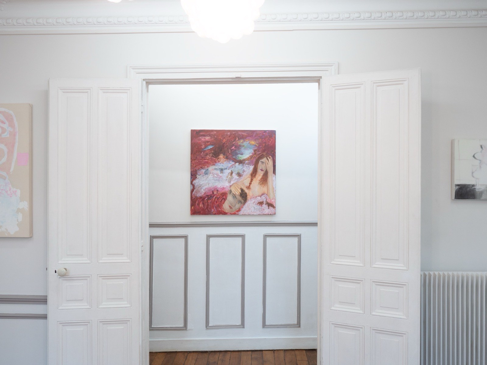
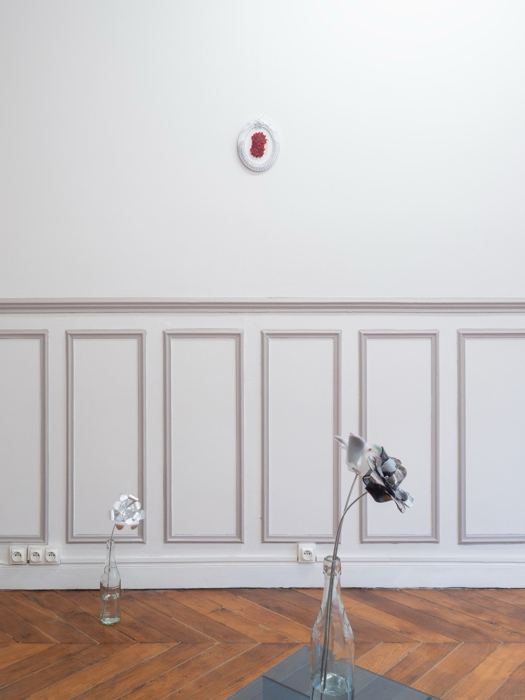

Magenta Made Me Hardcore
KR03 · en cours
L'odeur du maïs grillé se mêle à une sirène d'ambulance. Je descends faire du lèche-vitrines. Pendant que je me demande si les costumes en vitrine sont pour un mariage ou pour un enterrement, un grain brûlé se coince entre mes dents.
Toujours un tel boucan sur le boulevard de Magenta. Je remonterais bien regarder ça depuis le balcon. Comment peut-on laisser entrer tous ces stimuli ? On deviendrait fou. Ou du moins, hardcore.
Pourtant, ces sept artistes ont, on ne sait trop comment, choisi la douceur : Alexis Puget (@alexispuget), Caroline Ventura (@k.raw.94), Enam Granoth (@enamgranoth), Hyewon Mia Lee (@h_circleeeee), Luka Naujoks (@lukanaujoks), Nicole (@nic0l3333) et Yeva Khrapova (@yevakhrapova).
Kramer × Erratum
The smell of roasted corn mingles with an ambulance siren. I go downstairs and do some lèche-vitrine. While I wonder whether the suits in the window are for a wedding or a funeral, a burnt kernel gets stuck between my teeth.
Always such a racket on Boulevard de Magenta. I'd rather go back up and watch from the balcony. How can anyone let all these stimuli in? You'd go mad. Or at least hardcore.
Yet these seven artists somehow chose softness: Alexis Puget (@alexispuget), Caroline Ventura (@k.raw.94), Enam Granoth (@enamgranoth), Hyewon Mia Lee (@h_circleeeee), Luka Naujoks (@lukanaujoks), Nicole (@nic0l3333), Yeva Khrapova (@yevakhrapova).
Kramer × Erratum
Artistes — 7 entrées
Vues d'installation — 8 entrées

«Magenta Made Me Hardcore», vue d'installation, KRAMER, Paris, 2026. Photo : Matteo Kramer.

«Magenta Made Me Hardcore», vue d'installation, KRAMER, Paris, 2026. Photo : Matteo Kramer.

«Magenta Made Me Hardcore», vue d'installation, KRAMER, Paris, 2026. Photo : Matteo Kramer.

«Magenta Made Me Hardcore», vue d'installation, KRAMER, Paris, 2026. Photo : Matteo Kramer.

«Magenta Made Me Hardcore», vue d'installation, KRAMER, Paris, 2026. Photo : Matteo Kramer.

«Magenta Made Me Hardcore», vue d'installation, KRAMER, Paris, 2026. Photo : Matteo Kramer.

«Magenta Made Me Hardcore», vue d'installation, KRAMER, Paris, 2026. Photo : Matteo Kramer.

«Magenta Made Me Hardcore», vue d'installation, KRAMER, Paris, 2026. Photo : Matteo Kramer.